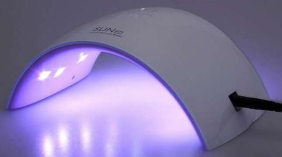
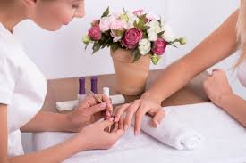
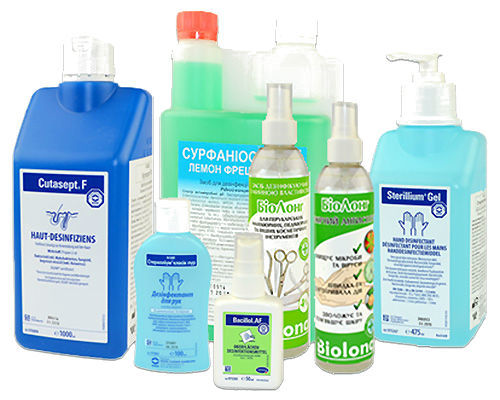
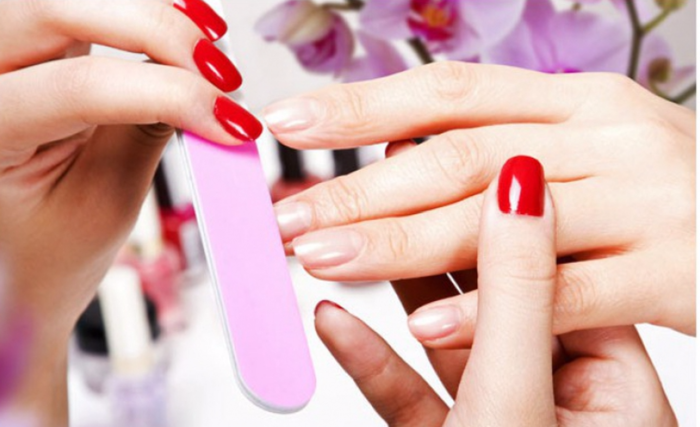
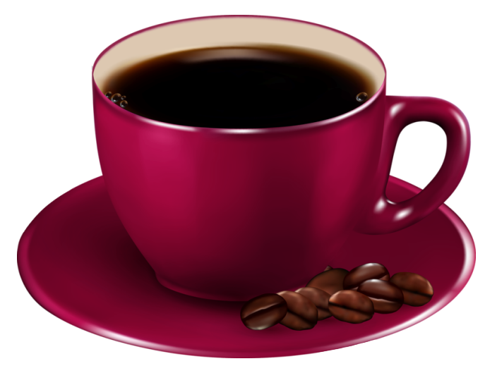

У нас качественное оборудование

Мы идем в ногу со временем и не отстаем от новых технологий. Мы постоянно совершенствуемся.У нас работают только профессионалы

Салон гордится своими сотрудниками. Здесь работает дружный коллектив мастеров и профессионалов. Они ежедневно совершенствуют свои навыки, изучают новые технологии, знакомятся с современными материалами и знают все о последних тенденциях.Мы за безопасность

Важнейшим показателем качества услуг является стерильность и надежность материалов, поэтому дезинфекция стоит на первом месте. Все принадлежности выполнены из специального нержавеющего металла и перед каждым клиентом проходят все этапы спецобработки. Любые приборы и дополнительные приспособления, стол и даже лампы регулярно проходят очистку специальными растворами.Мы экономим ваше время
Одна из самым популярных услуг-уникальный комплекс. Два мастера одновременно сделают вам и маникюр и педикюр. И это займет всего один час.
Доверие, основанное на гарантии

Мы предоставляем 5-дневную гарантию на покрытие. Если у вас откололся кусочек гель-лака или образовались трещинки, мастер бесплатно переделает работуУютная атмосфера

Вас встретит приветливый администратор. У нас есть удобные столики на двоих. Пока мастера заняты вами, вы можете пообщаться и выпить по чашечке кофе. А те, кто пришел без компании, могут просто расслабиться и посмотреть фильм.
Ногтевой салон "Маркиза" приглашает вас в свой салон, где царит уютная атмосфера и качественное обслуживание. Мы можем считаться лучшими, так как: